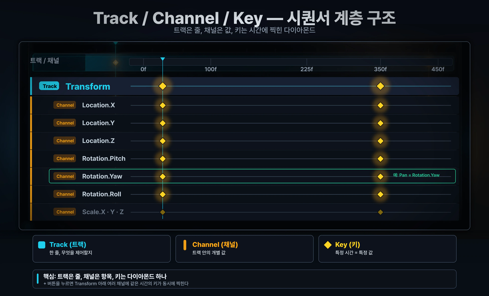
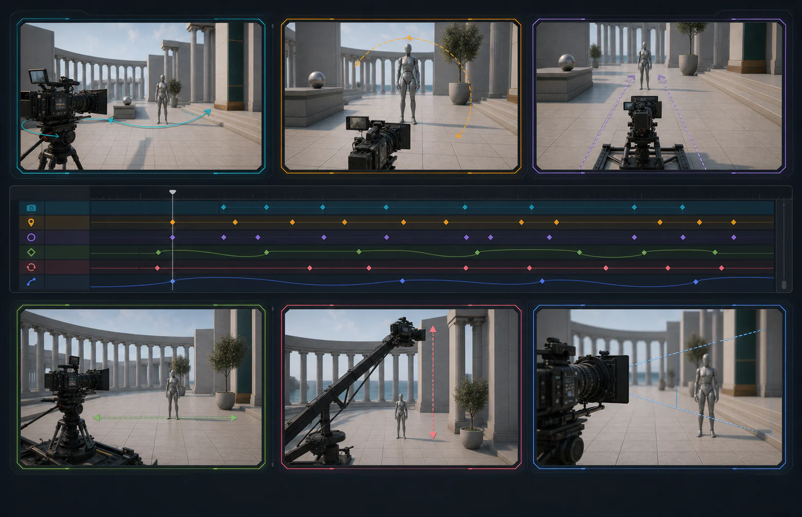
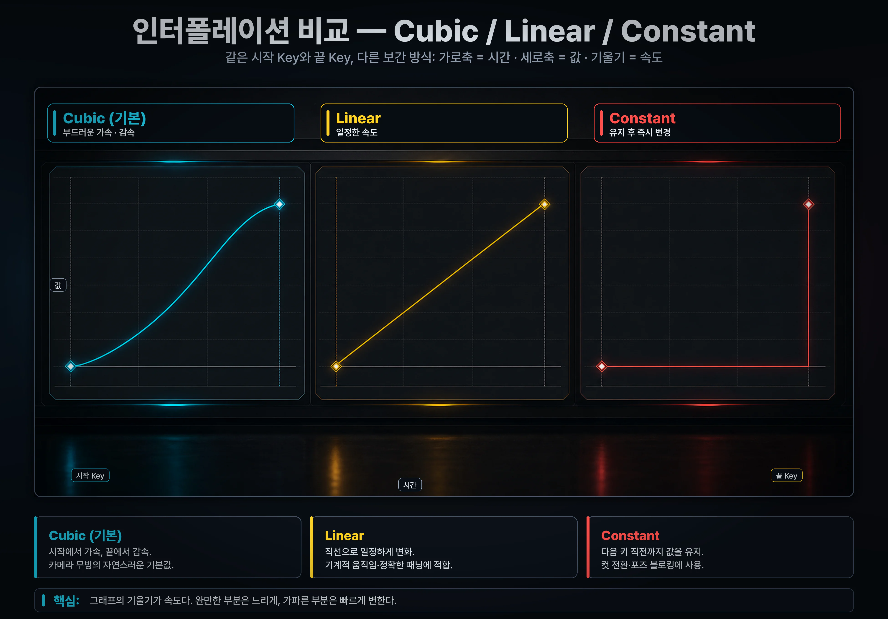
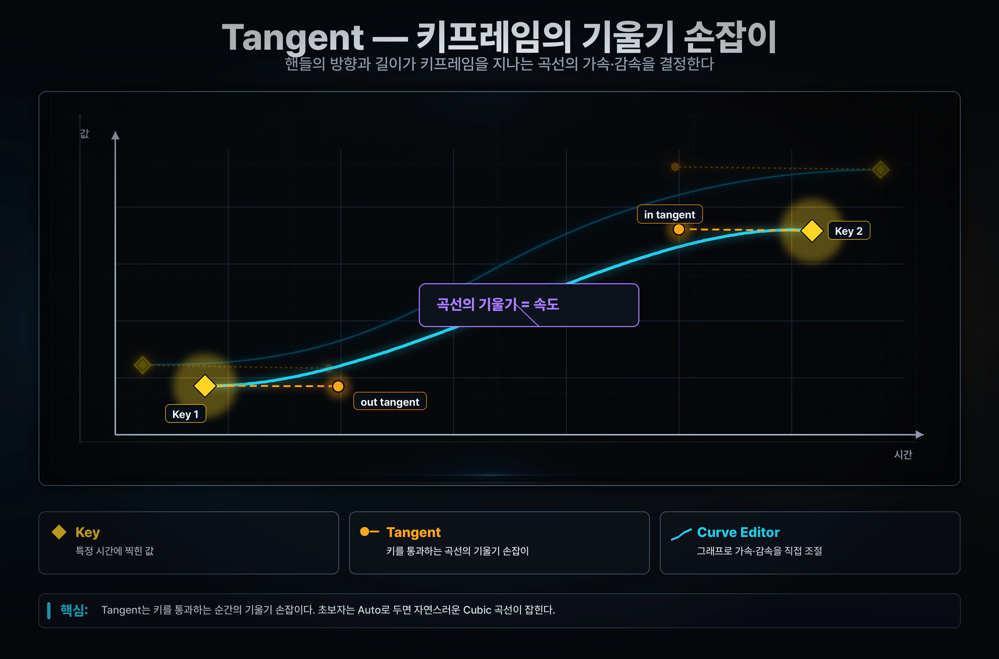
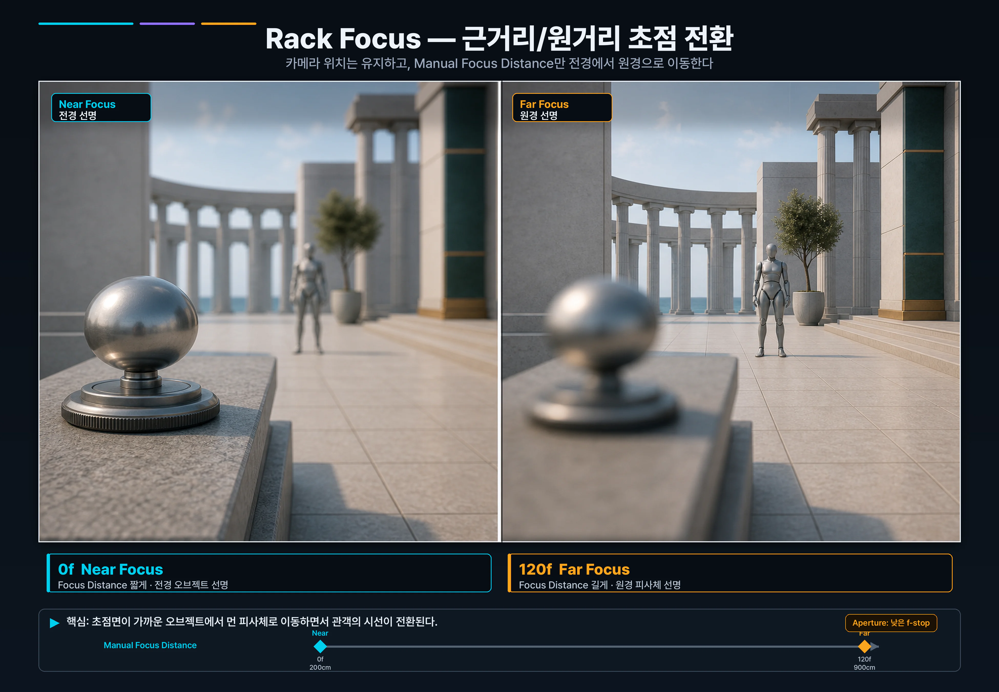
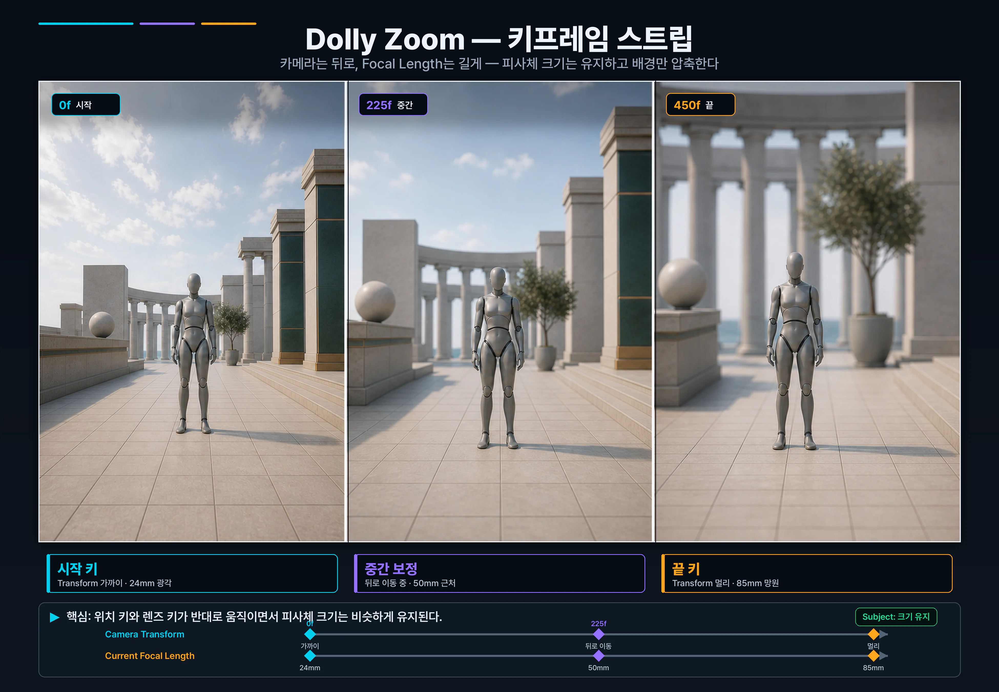

9주차 2교시 — 레벨 시퀀서와 키프레임 (학생용)
관련 문서
| 관계 | 문서 |
|---|---|
| 강의 계획서 | 강의계획서: Game Engine II |
| 강의 아웃라인 | 9주차 아웃라인: 시퀀서 기초 |
| 1교시 핸드아웃 | 1교시: 시네 카메라의 영화 언어 |
| 7주차 1교시 | 7주차: 시네마틱 카메라 이론 |
- Level Sequence 에셋을 생성하고 시퀀서 에디터를 다룰 수 있다
- 7주차 카메라 무빙 6종(Pan/Tilt/Dolly/Track/Crane/Zoom)을 시퀀서 키프레임으로 구현할 수 있다
- Rack Focus와 Dolly Zoom 같은 영화 기법을 키프레임으로 구현할 수 있다
1교시에 배운 4대 파라미터 매핑 — Filmback=프레임 그릇 / Focal Length=보는 범위 / Aperture=흐림 강도 / Focus Distance=선명한 위치. 이 4개를 정지 화면에서 만져봤습니다.
영화는 정지 화면이 아닙니다. 시간이 흐릅니다. 그 '시간'을 다루는 도구가 시퀀서(Sequencer)입니다.
7주차에 카메라 무빙 6종 — Pan, Tilt, Dolly, Track, Crane, Zoom — 을 그림으로 배웠습니다. 오늘은 이 무빙들이 시퀀서 키프레임으로 어떻게 구현되는지 직접 확인합니다.
| 용어 | 의미 |
|---|---|
| Level Sequence | 시간 기반 데이터를 담는 에셋(파일). Content Browser에 저장됨 |
| Sequencer | 그 에셋을 편집하는 에디터(창). Level Sequence를 더블클릭하면 열림 |
오늘 흐름은 1. 시퀀서 만들기 → 2. 카메라 무빙 6종 → 3. 인터폴레이션 → 4. 영화적 응용 순서입니다.
1. 시퀀서 만들기 + 카메라 추가
1-1. Level Sequence 에셋 만들기
Level Sequence는 '이 레벨에서 일어나는 시간 기반 이벤트의 묶음'입니다. 같은 레벨에서도 여러 컷을 독립적으로 저장하기 위해 별도 에셋입니다.
- 1. 에디터 하단 Content Browser에서 빈 공간 우클릭
- 2. 메뉴에서 Cinematics > Level Sequence 선택
- 3. 생성된 에셋 이름을
LS_Week09_Practice로 변경 - 4. 더블클릭하여 시퀀서 에디터 열기
LS_는 Level Sequence, 머티리얼은 M_, 블루프린트는 BP_. 실무에서는 더 자세히 — LS_장소_샷명_버전 식으로 짓습니다.
1-2. 시퀀서 에디터 — 4개 영역
| 영역 | 위치 | 역할 |
|---|---|---|
| 재생 컨트롤 | 좌측 상단 | 재생/정지/처음으로/끝으로 |
| 트랙 영역 | 좌측 본문 | 무엇을 제어할지 |
| 타임라인 | 우측 상단 | 언제 바뀔지 |
| 플레이헤드 (빨간 막대) | 타임라인 빨간 세로선 | 현재 시간 위치 |
역할을 한 줄로 — 트랙은 '무엇을', 타임라인은 '언제'입니다.
1-3. 시퀀스 길이 설정 — 15초 = 450프레임
프레임레이트는 1초당 프레임 개수입니다. 우리는 30fps로 갑니다. 30fps에서 450프레임 = 15초입니다.
- 1. 시퀀서 에디터 우측 상단 End 박스에
450입력 - 2. View Range도 같이 0~450으로 통일
Playback Range = 실제 재생 길이 / Working Range = 작업 영역 / View Range = 화면에 보이는 줌. 셋 다 0~450으로 통일합니다.
1-4. 시네 카메라를 시퀀서에 추가
Track(트랙)은 특정 액터/속성을 시간에 따라 제어하는 줄입니다. 1교시에 만든 Cine Camera Actor를 트랙으로 등록해야 시간축에서 다룰 수 있습니다.
- 1. Outliner에서 CineCameraActor 선택
- 2. 시퀀서 에디터 좌측 상단 + Track 버튼 클릭
- 3. Actor To Sequencer > Add 'CineCameraActor' 선택
트랙 옆 ▶ 클릭으로 펼치면:
| 레벨 | 다루는 것 |
|---|---|
| Actor 트랙 (CineCameraActor) | 카메라 액터 자체 |
| 하위 트랙: Transform | 위치(Location) + 회전(Rotation) + 스케일(Scale) |
| 하위 트랙: CineCameraComponent | Filmback, Focal Length, Aperture, Focus Settings |
시퀀서가 추가한 카메라는 Possessable 모드 — 레벨 기존 액터를 시퀀서가 잡고 조종합니다. 시퀀서에서 카메라를 움직이면 본인 레벨의 그 카메라가 영향받습니다.
1-5. 시퀀서 카메라 시점 켜기
- 1. 시퀀서 트랙의 CineCameraActor 줄 옆 카메라 아이콘 클릭
- 2. 뷰포트가 카메라 시점으로 잠김
이 아이콘은 '관객이 보게 될 화면을 뷰포트로 잠그는' 버튼입니다. 작업 중에는 거의 항상 켜둡니다.
| 증상 | 해결 |
|---|---|
| 우클릭 메뉴에 Cinematics 없음 | Content Browser 빈 공간에서 우클릭 |
| End 박스 위치 못 찾음 | 시퀀서 에디터 우측 상단 작은 박스, Start/End 라벨 옆 |
| +Track에 Add 'CineCameraActor' 없음 | Outliner에서 카메라 재선택 후 다시 +Track |
| 카메라 아이콘 클릭해도 뷰포트 안 바뀜 | 메인 뷰포트 클릭 후 다시 시도 |
2. 카메라 무빙 6종 — 시퀀서로 직접 만들기
여기가 오늘의 핵심입니다. 7주차에 카메라 무빙 6종을 그림으로 배웠습니다. 시퀀서의 트랜스폼 키프레임만으로 6종 중 5종이 다 만들어집니다. 나머지 1종(Zoom)은 Focal Length 키프레임으로.
2-1. 트랙 / 채널 / 키 계층

| 단어 | 의미 | 예시 |
|---|---|---|
| Track (트랙) | 한 줄 — "무엇을 제어할지" | Transform 트랙 |
| Channel (채널) | 트랙 안의 개별 값 | Location.X, Rotation.Yaw |
| Key (키) | 채널의 특정 시간에 박힌 값 | 다이아몬드 하나 |
트랙은 줄, 채널은 항목, 키는 다이아몬드 하나입니다. 키프레임이라고 부르는 게 정확히는 이 다이아몬드입니다.
2-2. 키프레임 추가 방법
| 방법 | 어떻게 | 어디에 키가 추가됨 |
|---|---|---|
| + 버튼 | 트랙 옆 + 클릭 | 그 트랙의 모든 채널 동시 |
| S 단축키 | 시퀀서에서 S | + 버튼이랑 동일 |
| Auto-Key (안 권장) | 자물쇠 토글 | 변경된 채널만 자동 |
Auto-Key가 켜져 있으면 값을 바꾸는 순간 현재 플레이헤드 위치에 자동으로 키가 박힙니다. 플레이헤드 위치를 잘못 보고 값을 바꾸면 엉뚱한 시간에 키가 추가되어버립니다. 우리 수업에선 Auto-Key를 끄고 + 버튼이나 S 단축키로 수동으로 진행합니다.
2-3. 7주차 6종 무빙 → 시퀀서 매핑
| 무빙 | 7주차 정의 | 시퀀서 키프레임 채널 |
|---|---|---|
| Pan | 카메라 제자리, 좌우 회전 | Rotation.Yaw |
| Tilt | 카메라 제자리, 상하 회전 | Rotation.Pitch |
| Dolly | 카메라 앞뒤 이동 | Location forward/back |
| Track | 카메라 좌우 이동 | Location side |
| Crane | 카메라 상하 이동 | Location.Z |
| Zoom | 렌즈 조절 (카메라 고정) | Current Focal Length |

각 무빙마다 키프레임 두 개씩만 박으면 됩니다. 공통 패턴은 동일합니다:
- 플레이헤드를 0프레임으로 → 시작 자세/값 잡기 → + 버튼 키
- 플레이헤드를 450프레임으로 → 끝 자세/값 잡기 → + 버튼 키
- 재생해서 확인 (변화 없으면 시작/끝 값이 같은지 확인)
함께 실습 절차 — 6종 무빙
각 무빙을 만들기 전에 매번 시퀀서 카메라 아이콘이 켜져있는지 확인하세요.
1. Pan — 좌우 회전
카메라는 같은 자리에 두고, 시선만 좌→우로 돌립니다.
- 1. 플레이헤드를 0프레임으로 이동
- 2. 뷰포트(파일럿 모드)에서 카메라가 좌측을 향하도록 회전
- 3. CineCameraActor 트랙의 Transform 옆 + 버튼 → 시작 키
- 4. 플레이헤드를 450프레임으로
- 5. 카메라가 우측을 향하도록 회전 (위치는 그대로, Yaw만 변경)
- 6. + 버튼 → 끝 키
- 7. 재생 → 카메라가 같은 자리에서 좌→우로 부드럽게 회전
사람이 고개 돌리는 느낌으로 공간 전체를 보여줍니다.
2. Tilt — 상하 회전
카메라는 같은 자리, 시선만 아래→위로 돌립니다.
- 1. 플레이헤드 0프레임 → 카메라가 아래를 향하도록 회전 → + 버튼
- 2. 플레이헤드 450프레임 → 카메라가 위를 향하도록 회전 → + 버튼
- 3. 재생 → 시선이 땅에서 하늘로 천천히 올라감
'이 권력이 얼마나 큰지' 수직적으로 보여줍니다.
3. Dolly — 카메라 앞뒤 이동
카메라가 피사체에 다가가거나 멀어집니다. 이전 키프레임을 모두 삭제하거나(우클릭 → Delete) 새 시퀀스를 만들어 시작합니다.
- 1. 플레이헤드 0프레임 → 카메라를 핵심 액터에서 멀리 → + 버튼
- 2. 플레이헤드 450프레임 → 카메라를 핵심 액터에 가까이 → + 버튼
- 3. 재생 → 카메라가 피사체에 다가감 (Dolly In)
관객이 물리적으로 캐릭터에게 다가가는 느낌. 줌과 다릅니다 — 카메라가 직접 가니까 원근감이 자연스럽게 변합니다.
4. Track — 카메라 좌우 이동
카메라가 피사체와 평행하게 옆으로 따라갑니다.
- 1. 플레이헤드 0프레임 → 카메라를 피사체 좌측에 배치 → + 버튼
- 2. 플레이헤드 450프레임 → 카메라를 피사체 우측으로 평행 이동 → + 버튼
- 3. 재생 → 카메라가 옆으로 흐르면서 피사체를 훑음
횡스크롤로 인물을 따라가며 공간을 보여줍니다.
5. Crane — 카메라 상하 이동
카메라가 위로 올라가거나 아래로 내려옵니다.
- 1. 플레이헤드 0프레임 → 카메라를 낮은 위치에 배치 → + 버튼
- 2. 플레이헤드 450프레임 → 카메라를 높이 들어올림 (Location.Z만 변경) → + 버튼
- 3. 재생 → 카메라가 부드럽게 상승
개인의 고통에서 전쟁의 규모로 시점이 전환되는 효과. 드론이 생기기 전에는 실제 크레인에 카메라를 매달았습니다.
6. Zoom — Focal Length 변경
이건 트랜스폼 키프레임이 아니라 Focal Length 키프레임으로 만듭니다. 카메라는 움직이지 않고 렌즈만 조절합니다.
- 1. 기존 Transform 키 삭제 (카메라는 한 자리에 고정)
- 2. CineCameraComponent 트랙 ▶ 펼치기
- 3. Current Focal Length 트랙 찾기 (없으면 +Track > Camera > Current Focal Length)
- 4. 플레이헤드 0프레임 → Focal Length 24mm → + 버튼
- 5. 플레이헤드 450프레임 → Focal Length 85mm로 변경 → + 버튼
- 6. 재생 → 화각이 좁아지면서 줌 인 효과
Zoom은 카메라 고정, 화각만 변함 → 원근감 그대로. Dolly는 카메라 직접 이동 → 원근감이 변함. 결과 화면이 비슷해 보여도 원근감이 다릅니다. 이 차이가 잠시 뒤 Dolly Zoom의 핵심입니다.
2-4. 6종 정리
| # | 무빙 | 키프레임 채널 | 한 줄 |
|---|---|---|---|
| 1. | Pan | Rotation.Yaw | 제자리 좌우 회전 |
| 2. | Tilt | Rotation.Pitch | 제자리 상하 회전 |
| 3. | Dolly | Location 앞뒤 | 카메라 직접 다가감 |
| 4. | Track | Location 옆 | 평행 이동 |
| 5. | Crane | Location.Z | 상하 이동 |
| 6. | Zoom | Current Focal Length | 렌즈만 조절 |
6종 무빙은 단독으로도 쓰지만, 보통 2~3개를 섞습니다. Dolly + Tilt up이 흔한 조합입니다. 잠시 뒤 만들 Dolly Zoom은 Dolly + Zoom 조합입니다.
| 증상 | 원인 | 해결 |
|---|---|---|
| 카메라가 움직이지 않임 | 시작/끝 키프레임이 같은 위치 | 시작과 끝의 위치/회전을 다르게 |
| Pan에서 카메라가 흔들림 | Yaw만이 아니라 Location도 바뀜 | Transform 전체 + 버튼 대신 Rotation.Yaw 채널만 따로 키 |
| Zoom 트랙이 보이지 않음 | Current Focal Length 트랙이 없음 | +Track > Camera > Current Focal Length로 추가 |
| 카메라가 시퀀서 안 따라가고 가만히 있음 | 시퀀서 카메라 아이콘이 꺼짐 | 시퀀서 트랙 옆 카메라 아이콘 다시 클릭 |
| 키 잘못 박았음 | 플레이헤드 위치 착각 | 다이아몬드 클릭 후 Delete 키 |
3. 인터폴레이션 — 키프레임 잇기
키프레임 두 개 사이를 어떻게 잇느냐 — 그게 인터폴레이션입니다.
그래프로 표현하면 — 가로축은 시간, 세로축은 값, 선의 기울기는 속도입니다.
| 인터폴레이션 | 그래프 모양 | 결과 (속도 변화) | 언제 쓰나 |
|---|---|---|---|
| Cubic (기본) | 부드러운 S자 곡선 | 시작 가속, 끝 감속 (Ease In/Out) | 영화 같은 자연스러운 움직임 — 거의 항상 |
| Linear | 직선 | 일정한 속도로 변화 | 기계적 움직임, 일정 패닝, UI |
| Constant | 계단식 | 다음 키프레임 직전까지 값 유지 | 컷 전환, 포즈 블로킹 |

현실 카메라랑 물체는 갑자기 최고 속도로 출발하지 않습니다. 출발할 때 가속하고, 멈출 때 감속합니다. Cubic이 그 곡선을 흉내내는 것입니다.
인터폴레이션 변경 방법
키프레임 위에서 우클릭하면 인터폴레이션 메뉴가 나옵니다.
- 1. 시퀀서에서 추가된 키프레임 위에 마우스 우클릭
- 2. 메뉴에서 Cubic / Linear / Constant 중 선택
Tangent는 키프레임을 통과하는 곡선의 기울기 손잡이입니다. 들어오는 속도와 나가는 속도를 따로 조절합니다. Auto로 두면 자동으로 자연스러운 곡선이 잡힙니다. Curve Editor는 키 값을 그래프로 보면서 속도를 조절하는 별도 창입니다. 9주차에 깊이 다루지 않습니다.

Linear vs Cubic 직접 비교
방금 만든 6종 무빙 중 하나를 골라 비교합니다.
- 1. 키프레임 두 개를 우클릭 → Linear로 변경
- 2. 재생 → 카메라가 일정 속도로 움직이고 시작/끝에서 갑자기 멈춤. 어색함.
- 3. 다시 우클릭 → Cubic으로 복원
- 4. 재생 → 부드러운 가속/감속
4. 영화적 응용 — Aperture / Rack Focus / Dolly Zoom
지금까지 트랜스폼 + Focal Length 키프레임으로 6종 무빙을 만들었습니다. 이제 카메라 파라미터(Aperture, Focus Distance)도 시간에 따라 변할 수 있다는 걸 활용한 응용 효과 3가지를 만듭니다.
| 응용 효과 | 키프레임 | 연출 목적 |
|---|---|---|
| Aperture 변화 | Current Aperture | 심도가 시간에 따라 얕아지거나 깊어짐 |
| Rack Focus | Manual Focus Distance | 한 피사체 → 다른 피사체 초점 이동 (감정/주의 전환) |
| Dolly Zoom | Transform + Focal Length 동시 | 불안감, 충격, 공간 왜곡 |
한 컷 안에서 화면비가 바뀌면 카메라 바디가 바뀐 효과가 돼서 관객이 이질감을 느낍니다. 한 시퀀스 = 하나의 Filmback으로 갑니다.
4-1. Aperture 변화 — 심도가 점차 얕아짐
Aperture를 시간에 따라 바꾸면 심도가 변합니다. 시작은 모든 게 선명한 다큐멘터리 룩(f/22), 끝은 인물 클로즈업 룩(f/1.4)으로 만들어봅니다.
- 1. CineCameraComponent 트랙에서 Current Aperture 트랙 펼침 (없으면 +Track 추가)
- 2. 플레이헤드 0프레임 → Aperture 22 → + 버튼
- 3. 플레이헤드 450프레임 → Aperture 1.4 → + 버튼
- 4. 재생 → 화면 전체 선명함 → 배경 흐려짐
1교시 심도 진단표 그대로 — 거리/Focal/배경 거리 세 가지를 점검합니다. f/1.4여도 카메라가 멀거나 광각(24mm)이거나 배경이 액터에 붙어있으면 효과가 약합니다.
4-2. Rack Focus — 한 피사체에서 다른 피사체로 초점 이동
영화에서 두 인물 대화 장면에서 초점이 한 사람에서 다른 사람으로 부드럽게 넘어가는 효과입니다.
감정/주의 전환. 관객 시선을 의도적으로 유도하는 도구입니다.
준비: 본인 레벨에 카메라에서 가까운 액터(약 200cm)와 먼 액터(약 800cm)가 있어야 합니다. 없으면 메가스캔 식물/바위 두 개를 빠르게 배치하세요. (단위 cm — 200cm가 2m)
Rack Focus 키프레임 절차:
- 1. CineCameraComponent 트랙에서 Manual Focus Distance 트랙을 찾으세요
- 2. Focus Method가 Manual인지 확인 (Tracking 상태면 Manual로)
- 3. Aperture를 f/2.0으로 (심도 얕게)
- 4. 플레이헤드 0프레임 → Manual Focus Distance 200 → + 버튼
- 5. 플레이헤드 450프레임 → Manual Focus Distance 800 → + 버튼
- 6. 재생 → 초점이 가까운 액터에서 먼 액터로 부드럽게 이동
f값이 낮을수록 심도가 얕아져서 초점 이동이 눈에 잘 보입니다. f/8 같은 깊은 심도에서는 모든 게 거의 다 선명해서 효과가 약합니다.
1교시에 본 '초점이 맞는 가상의 유리판'을 켜두면 시간에 따라 가까운 액터에서 먼 액터로 이동하는 게 보여서 이해가 쉽습니다.

4-3. Dolly Zoom — Dolly + Zoom 동시
실제 영화적인 효과입니다. 히치콕이 〈현기증〉에서 처음 쓴 효과. 2번 섹션에서 만든 Dolly와 Zoom을 동시에 거는 것입니다.
불안감, 충격, 공간 왜곡. 등장인물이 충격받거나 깨달음을 얻는 순간에 자주 등장합니다.
핵심 원리:
카메라가 멀어지면 피사체가 작아 보입니다. 그런데 동시에 Focal Length를 늘리면(망원으로) 피사체가 다시 커집니다. 이 두 효과가 상쇄돼서 피사체 크기는 거의 그대로 유지됩니다. 그런데 배경의 원근감은 동시에 변합니다 — 망원이라 배경이 가까이 압축되니까 배경만 늘어나는 효과가 보입니다.
단순 줌은 배경 원근 변화가 약합니다. 카메라 이동 + 렌즈 변화가 함께 있어야 배경이 밀리는 그 기괴한 느낌이 납니다.
Dolly Zoom 키프레임 절차:
- 1. 기존 키프레임 모두 삭제하고 새로 시작
- 2. Transform 키프레임 (Dolly Out):
- 0프레임 → 카메라가 핵심 액터에 가까이 → + 버튼
- 450프레임 → 카메라를 멀리 빼기 → + 버튼
- 3. Focal Length 키프레임 (Zoom In):
- 0프레임 → Focal Length 24mm → + 버튼
- 450프레임 → Focal Length 85mm → + 버튼
- 4. 재생 → 피사체는 거의 같은 크기인데 배경이 점점 늘어나는 기괴한 효과

피사체 크기를 유지하려면 거리 증가 비율 ≈ Focal Length 증가 비율로 맞춰야 합니다. 거리가 약 2배 멀어지면 Focal Length도 대략 2배. 한 번에 정확히 맞지 않는 게 정상입니다.
한 번에 정확히 맞지 않아도 정상인 이유 — 피사체 거리, 카메라 방향, Focal Length, 프레이밍 중심 4가지가 동시에 맞아야 해서 반복 보정이 필요합니다. 3교시 실습에서 다시 만들 거니까 지금은 효과를 체감하는 게 목표입니다.
정리
4대 핵심
| # | 개념 | 핵심 |
|---|---|---|
| 1 | 시퀀서 만들기 | LS_ 에셋 생성 → 길이 450 → 시네 카메라 트랙 추가 → 카메라 아이콘 ON |
| 2 | 카메라 무빙 6종 | Pan/Tilt/Dolly/Track/Crane = Transform 키프레임. Zoom = Focal Length 키프레임 |
| 3 | 인터폴레이션 | 기본 Cubic. 거의 항상 Cubic |
| 4 | 영화적 응용 | Aperture 변화, Rack Focus(Manual Focus 키), Dolly Zoom(Transform + Focal 동시) |
한 줄 골격: 액터를 시퀀서에 추가 → 트랙 펼치기 → 플레이헤드 이동 → 값 변경 → + 버튼 키.
3교시 실습 치트시트
| 만들고 싶은 것 | 어떤 키프레임 |
|---|---|
| Pan / Tilt | Transform (Rotation만 변경) |
| Dolly / Track / Crane | Transform (Location만 변경) |
| Zoom | Current Focal Length |
| 심도 변화 | Current Aperture |
| 초점 이동 (Rack Focus) | Manual Focus Distance |
3교시 예고
3교시 미션 — 본인이 6주차에 만든 레벨에서, 시네 카메라로 15초짜리 Dolly Zoom 단일 샷 만들기. 즉 6종 무빙 중 Dolly + Zoom 조합.
3교시 완성 기준:
- Cine Camera 4대 파라미터 중 최소 3개를 의도적으로 사용 (Filmback 포함)
- 트랜스폼 키프레임 + Focal Length 키프레임 양쪽 사용
- 길이 10–20초
힌트 1: Filmback부터 정하세요. 35mm Academy로. 힌트 2: Focus 타겟이 될 액터가 본인 레벨에 있는지 먼저 확인. 없으면 메가스캔 식물/바위 하나 두드러지게 배치하고 시작.
- 키 잘못 박으면 다이아몬드 클릭 후 Delete
- 시퀀스 자체가 손상될까 걱정되면 시퀀스 에셋을 우클릭 > Duplicate해서 실험본을 따로 만드세요
- Auto-Key는 끄고 시작하세요